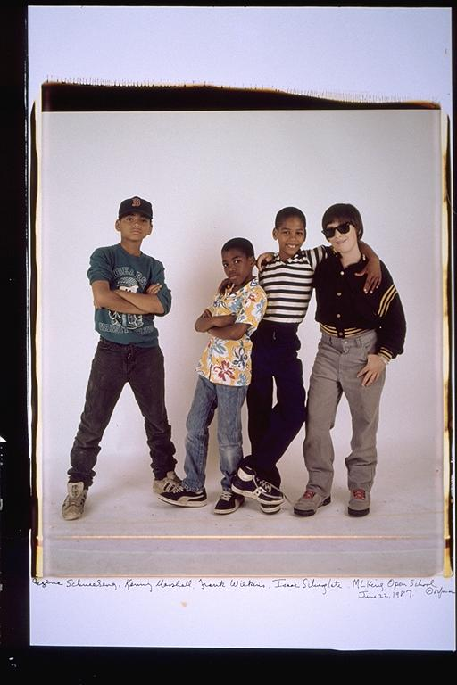

Aldo: When I look at this picture, I can only think how much they have grown. More in the physical sense, if anything. All these kids are now men. Eugene and Frank are both very tall and pretty strong. And Isaac, these days, in is great shape. He's very strong. Looks like he's very fit. It's amazing what physical changes do to you as a person as well. You're forced to think like an adult only cause you resemble one. So in 15 years, you go from kid to man, and there's no looking back.
